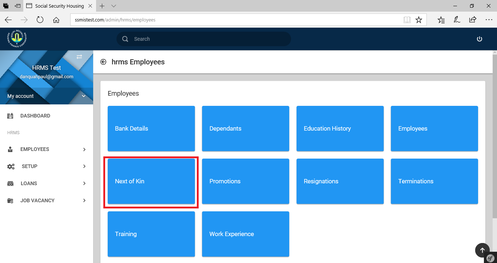

Introduction
The Human Resource Management System (HRMS) is a system designed to assist management take decisions that relate to workers
Who Benefits From The Human Resource Management System
- Members of Management
- Human Resource Management Personnels
- Information Technology Officials
System Input
- Employment Application
- Leave Application
- Performance Appraisal
- Intern Evaluation
- Payroll Update(s)
- Training Application
- Excuse Off-Duty Application
- Loan Application(s)
- Overtime Pay Application
- Staff Registration
- Medical Form(s)
- Payroll Data Sources
Required Information for Full Time Workers’ Registration
- Taxpayer Identification Number (TIN)
- Appropriately assigned Staff Salary Grade
- Appropriately assigned Staff Income Tax
- Appointment Letter containing:
- name
- department
- basic grade
- allowances
- staff number
- Bank Details comprising of:
- bank name
- basic bank account number
- account number
Required Information for Temporary Workers’ Registration
- Name
- Basic Pay
- Transport Allowance
- Residency
- Gross Pay
Required Information for Interns’ Registration
- Name
- Basic Allowance
- Transport Allowance
- Gross Pay
System Output
| Staff Profile | Pay Slips | Payroll Tracker | Performance Analysis | |
| Credit Union | FPS Contributions | Monthly Allowance | Allowances and Deductions Profile | |
| Detailed Payroll | Bank Schedules | View Loan Details | Detailed Payroll by Department(s) | |
| Loan Summary | Payroll Abstract | Acting Allowance | Exports By Department(s) | |
| Charge Allowance | Active Staff | Inactive Staff | List of All Employees | |
| Payroll Summary | NPF Contributions | Staff Club(s) | Breakdown Of All Deduction(s) | |
| Income Tax(es) | Leave Analysis | Net Comparison | Basic Salary By Department(s) | |
| Exportable Reports | Staff Loan Profile | Overtime | Report of Grades and Department | |
| Net Salary By Department(s) | List of Employees By Department(s) | Staff Medical Profile | Gross Salary by Department |
Allowable Human Resource Postings
- Loans
- building loan
- vehicle loan
- personal loan
- interest free vehicle insurance loan
- interest free one-by-six loan
- interest free educational loan
- interest free miscellaneous loan
- furniture loan
- appliance loan
- Allowances
- charge allowance
- acting allowance
- professional allowance
- transport allowance
- residential allowance
- confidential allowance
- heavy duty allowance
- risk allowance
- project allowance
- Refunds
- underpayment
- medical bill(s)
- Deductions
- medical admission(s)
- credit union
- lateness/absence
- part salary advance
- over payments
- mid month
- frame of lens
- surcharge(s)
Connected Systems
- Attendance and Access Control Management System
- Electronics Records Management System
- Payroll
Working With Employees’ Information
The higlighted areas, in red show the HRMS module. Several sub modules make up the HRMS platform. First is the Employee sub-module. Clikcing on the Employee button , brings up a page containing all employees’ information. See Image below.
The various actions you can take on this page are as listed: - access/edit/add/delete employee bank details. - access/edit/add/delete employee dependants’ details. - access/edit/add/delete employee education details. - access/edit/add/delete/view employee employment details. - access/edit/add/delete information on employees’ next of kin. - access/edit/add/delete information on employees’ in house training. - access/edit/add/delete information on employees’ work experience. - access/edit/add/delete information on employees’ promotion(s). - access/edit/add/delete information on employees’ resignation(s). - access/edit/add /delete information on employees’ termination(s).
Employee Bank Details
Clicking on the bank details button to access/edit/add/delete employee bank details opens a form as shown below; On this page, you can add an employees bank details, you can filter out or search for a specific employees details by typing out related information: the name, the branch, account number etc and as you type, the information is filtered and result displayed. On this same page you can edit as well as delete a record. You are at liberty to decide on the number of visible rows. A max of 100 is allowed. This form also allows you to generate and download a employees bank details as PDF, CSV, EXCEL or COPY displayed rows to your clipboard.
Clicking to add/edit an employee’s bank details opens a form as shown in the Figues below. When adding/editing an employee’s bank details, information for fields marked with * must be provided.
Employee Dependants
Clicking on the dependents button to access/edit/add/delete employee dependants’ details opens a table as shown in the figure below.
On this page, you can add, edit or delete a dependant, filter acros the list of dependants, limit or increase the visible dependants, export as PDF, EXCEL,CSV or COPY to your clipboard rows of visible dependants. The form below shows the form needed for adding a dependant. Information for fields marked with * must be provided.
Education History
Clicking on the education history button to access/edit/add/delete details of an employee’s education opens a table as shown in the figure below.
On this page, you can add, edit or delete an employees education history, filter acros the list of records, limit or increase the visible records, export as PDF, EXCEL,CSV or COPY to your clipboard rows of visible records. The form below shows the form needed for adding an education history record. Information for fields marked with * must be provided
Employee
Clicking on the employees button to access/edit/add/delete/view details of an employee opens a table as shown in the image below.
The HUD (Heads Up Display), on the page shows:
- 1.Displays total number of permanent staff.
- 2.Displays total number of contract staff.
- 3.Displays total number of interns.
The new addition to the action buttons is the view button. This allows you to view employee employment details.
Next of Kin

Clicking on the next of kin button to access/edit/add/delete details of an employee’s next of kin opens a table as shown in figure below
On this page, you can add, edit or delete an employees next of kin, filter acros the list of records, limit or increase the visible records, export as PDF, EXCEL,CSV or COPY to your clipboard rows of visible records. Clicking to add/edit an employee’s next of kin’s details opens a form as shown in figure below. When adding/editing an employee’s next of kin’s details,information for fields marked with * must be provided.
Promotions
Working With The Human Resource Management System Setup
Working With Loans
Loan Names
Clicking on the loan names button to access/view/edit/add/delete details of loan names open a table